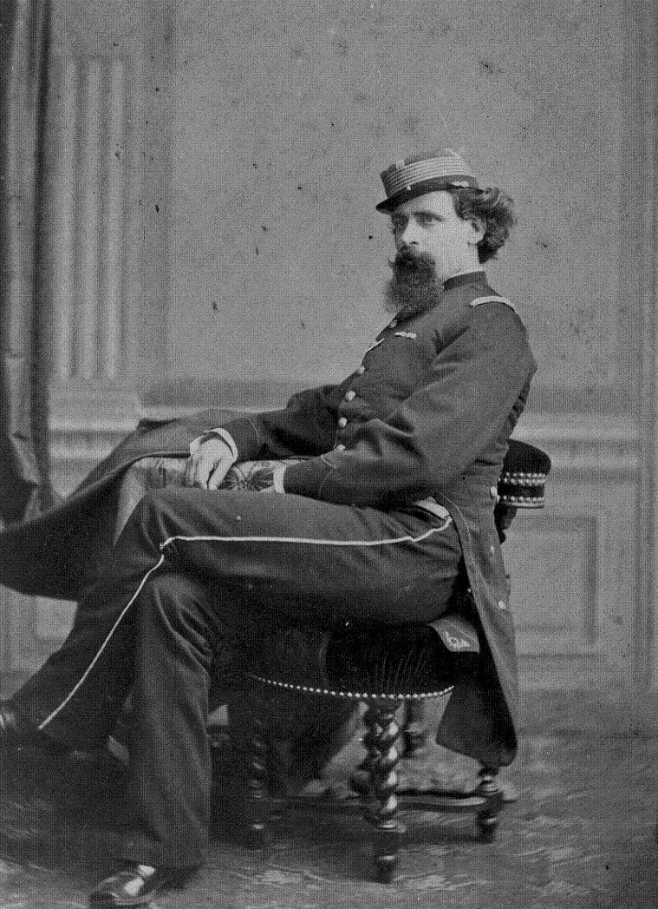

Durante el 1800 (siglo XIX), el militarismo fue adoptado por muchas de las nuevas repúblicas para “afianzar el poder del Estado moderno”(Talamante Pérez, 2020). La economía mundial crecía cada vez más rápido. Es en este contexto, la mayoría de los países de latinoamérica tomaron (o fueron forzados a tomar) el modelo agroexportador que les hizo modificar sus políticas económicas (Talamante Pérez, citando a Barran y Nahum, 2020). Los países, forzosamente, debieron ajustarse a los estándares del comercio internacional. Para esto, fue necesario un proceso de modernización económico-política (Talamante Pérez, citando a Jaime Yaffe, 2020).
En 1870, el Uruguay se encontraba en una “situación financiero-política muy convulsa”(Talamante Pérez, 2020). La falta de institucionalidad política, y “las frecuentes guerras civiles y las inevitables pérdidas de ganado que traía aparejadas desalentaban las inversiones en activos fijos o en la mejora de los rodeos”(Talamante Pérez, citando a Henry Finch). Es en este “desorden” (Talamante Pérez, 2020) el cual se acentuó con la Revolución de las Lanzas (1870-1872), un enfrentamiento entre los blancos y los colorados. En 1871 se funda la Asociación Rural del Uruguay (ARU). Cuyo objetivo fue promover el proceso de modernización del Uruguay; “así como intentar poner paz en el país para entrar en los flujos económicos internacionales”(pág. 142, Talamante Pérez, 2020). En enero de 1875, “los miembros de la alta sociedad apoyados por el ejército asentaron las bases del militarismo promoviendo un motín” (pág.142, Talamante Pérez, 2020), un “episodio” como lo llama Ardao. Al año siguiente (76), Lorenzo Latorre llegaría al poder e iniciaría el proceso de modernización del estado uruguayo. Es en este contexto, que Varela vivió y realizó su labor.
Coronel Lorenzo Latorre